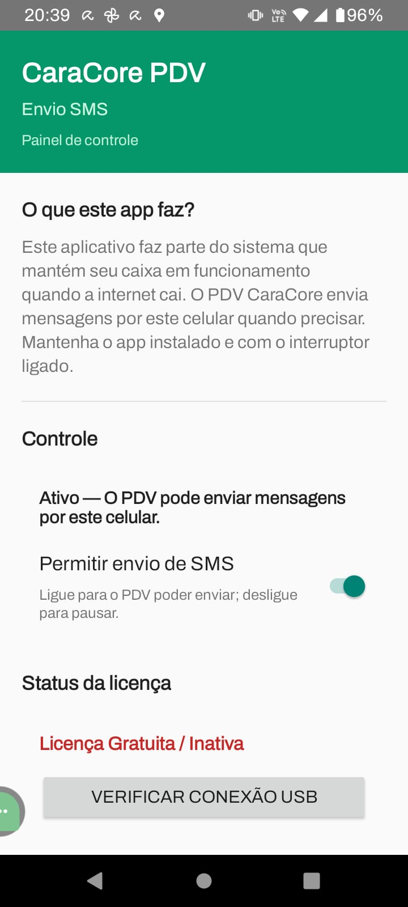

PDV Enviar SMS: o Aplicativo Auxiliar Android que — o Bra�o Direito do CaraCore PDV
Introdu��o: Quando o PDV Precisa Continuar sem Internet
O CaraCore PDV foi desenhado para uma promessa dif�cil: nunca parar de vender. Em modos offline e de conting�ncia, o sistema salva as vendas localmente e, quando a internet falta por muito tempo, precisa de uma via alternativa para comunicar ao mundo — por exemplo, enviar um recibo ou um aviso por SMS. — a� que entra o PDV Enviar SMS: um aplicativo Android m�nimo, instalado no celular do operador ou em um aparelho dedicado, que se torna o bra�o direito do PDV no chamado Enlace de Conting�ncia.
No artigo �A "Seriedade" do Java EE Encontra o Caos do Mobile: Li��es de uma Transi��o para o Flutter� (artigo 68), refletimos sobre o que significa levar rigor de engenharia enterprise para o ecossistema m�vel: aplica��es na borda da rede, modos offline, builds determin�sticos e a disciplina de n�o tratar o mobile como �brinquedo�. O PDV Enviar SMS — um exemplo concreto e deliberadamente enxuto: n�o — Flutter, — Android nativo (Java); n�o — um app �gen�rico�, — um componente especializado que faz poucas coisas e as faz bem. Ele ilustra, na pr�tica, muitas das li��es que discutimos naquele texto.
1. O que — o PDV Enviar SMS?
O PDV Enviar SMS (ou pdv-sms-enviar no reposit�rio) — um app Android que cumpre duas fun��es vitais para o ecossistema CaraCore PDV:
- Enviar SMS sob comando do PC: O PDV rodando no computador envia a ordem de envio atrav�s do ADB (Android Debug Bridge). O celular recebe o intent com n�mero e texto, dispara o SMS e encerra. N�o exige que ningu�m toque no aparelho — ideal para automação em modo de conting�ncia (recibos, alertas) ou em fluxos em que o PC — o �c�rebro� e o celular funciona como �modem de SMS�.
- Receber e expor a licen�a Premium: O app escuta SMS contendo
CC-LICENSE:[CHAVE]ouCARACORE-KEY:[CHAVE]. Quando o n�mero oficial da Cara Core est� configurado, s� mensagens desse remetente s�o aceitas. A chave — validada (formato e vig�ncia) e armazenada. O PDV no PC consulta, via ADB e ContentProvider, o hardware_id (ANDROID_ID), a chave e se a licen�a est� v�lida — tudo sem depender de internet.
Ou seja: no cen�rio de conting�ncia, o PDV continua vendendo com banco local; quando precisa enviar um SMS, usa o app no celular conectado por USB. E quando a Cara Core envia a licen�a Premium por SMS, o app recebe, valida e disponibiliza essa informa��o para o PDV. Por isso ele — o bra�o direito: um elo confi�vel e previs�vel entre o mundo �sem rede� e o mundo �com chip e SMS�.
2. Por que �m�nimo� e por que �via ADB�?
A decis�o de manter o app pequeno e acionado pelo PC n�o — acidental. No artigo 68, falamos de aplica��es na borda da rede e de evitar complexidade desnecess�ria. Aqui, a borda — o celular: ele tem chip, antena e permiss�o para enviar e receber SMS; o PDV tem a l�gica de neg�cio, o banco e a decis�o de quando e o qu� enviar.
Se o app fosse �inteligente� demais — com l�gica de neg�cio, sincroniza��o pr�pria, interface rica �, aumentar�amos a superf�cie de falha e a dificuldade de manuten��o. Em vez disso, o PDV Enviar SMS segue o princ�pio de fazer uma coisa e fazer bem: receber ordens via intent, enviar SMS e, em paralelo, receber e expor a licen�a. O PC continua sendo a fonte da verdade; o app — um executor e um reposit�rio local de um �nico tipo de dado sens�vel (a licen�a).
O uso do ADB pode parecer �t�cnico� demais para o dia a dia, mas na pr�tica o operador ou o gestor n�o precisam digitar comandos: o pr�prio CaraCore PDV (e scripts como enviar-sms.bat na raiz do projeto) invocam o ADB. O celular s� precisa estar conectado por USB, com depura��o USB ativada e com a permiss�o de envio de SMS j� concedida na primeira abertura do app. Depois disso, o fluxo — transparente.
3. Duas Fun��es, Um S� App

Enviar SMS
O PC dispara um intent para a SendSmsActivity com o n�mero e o corpo da mensagem. Em modo de conting�ncia, o PDV pode, por exemplo, enviar um recibo resumido ao cliente ou um alerta ao gestor. O script enviar-sms.bat (na raiz do caracore-pdv) usa o comando:
adb shell am start -n br.com.caracore.pdv.sms/.SendSmsActivity -e number "5541999999999" -e body "Sua mensagem"O app envia o SMS e encerra. N�o h� teclado, n�o h� confirma��o na tela — apenas a execu��o do comando. A permiss�o SEND_SMS — pedida na primeira abertura (na ConfigActivity); depois, o envio via ADB — autom�tico.
Licen�a Premium e exposi��o para o PDV
O SMSReceiver escuta os SMS recebidos. Se a mensagem contiver CC-LICENSE:[CHAVE] ou CARACORE-KEY:[CHAVE] — e, quando configurado, vier do n�mero oficial da Cara Core �, a chave — extra�da, validada (formato CC-YYYYMM-{hex8}, com YYYYMM >= m�s atual) e guardada. Na tela de configura��o, o status aparece em vermelho (�Licen�a Gratuita / Inativa�) ou em verde (�Licen�a Premium Ativa�).
O PDV no PC obt�m os dados via ContentProvider, usando ADB:
adb shell content query --uri content://br.com.caracore.pdv.sms.licenca/licencaColunas expostas: hardware_id, chave, valida (1 ou 0), mes_ano. Assim, o PDV sabe se aquele aparelho est� com licen�a Premium ativa sem precisar de internet.
4. Li��es do Artigo 68 Aplicadas ao PDV Enviar SMS
No artigo 68, destacamos a import�ncia de builds determin�sticos, de tratar o nativo com seriedade e de reduzir a superf�cie de ataque da aplica��o. O PDV Enviar SMS materializa v�rias dessas ideias:
- Builds reproduz�veis: O projeto usa
build.bat(debug, release, bundle para Play Store),config.bat(detec��o de JDK 11+ e de ANDROID_HOME) e Gradle com op��es que reduzem variabilidade (--max-workers=1,-Dorg.gradle.vfs.watch=false). O build ocorre no diret�riobuild\do pr�prio projeto. Em ambientes com antiv�rus agressivo, h� orienta��o para exclus�o da pasta nas exce��es do Defender e uso debuild.bat cleanquando necess�rio — o mesmo esp�rito de �um junior executa com confian�a� de que falamos no 68. - Um componente numa arquitetura maior: O app n�o tenta substituir o PDV; — um m�dulo especializado. A l�gica de neg�cio (quando enviar, o que enviar, como interpretar a licen�a) fica no servidor/PDV. O mobile faz o que s� o mobile pode fazer: ter chip, antena e permiss�es de SMS. — a divis�o de responsabilidades que, no 68, associamos a �uma l�gica de neg�cio, m�ltiplas frentes�.
- Seguran�a por desenho: O app s� envia SMS quando recebe um intent (via ADB ou outro app). Quem controla o ADB — quem tem o PC e o cabo em m�os — em geral o pr�prio operador ou o suporte autorizado. Evita-se l�gica aut�noma e maliciosa dentro do app; o �gatilho� est� fora, em um ambiente controlado.
5. Na Pr�tica: Scripts e Fluxo de Uso
Quem desenvolve ou implanta o CaraCore PDV encontra, no pacote do android-sms-enviar, scripts que automatizam o ciclo de vida do app:
build.bat: Gera o APK debug (padr�o), o APK release (comkeystore.properties) ou o AAB para a Play Store (build.bat bundleoubuild.bat aab). Op��esclean,clean release,clean bundlepara limpar e recompilar.publicar-celular.bat: Valida o ambiente (ANDROID_HOME, adb, dispositivo emstate=device, API = 24), monta o APK se precisar e instala comadb install -r. Facilita a implanta��o em campo.verificar-app.bat: Confere se o dispositivo est� conectado e autorizado, se o app est� instalado e se a permiss�oSEND_SMSfoi concedida. A op��overificar-app.bat test 5541999999999envia um SMS de teste para o n�mero informado.enviar-sms.bat: Fica na raiz do caracore-pdv e usa o intent daSendSmsActivitypara enviar uma mensagem. Se o app n�o estiver instalado, o script pode abrir o app de Mensagens do sistema (a� sim seria preciso tocar em Enviar no celular — por isso a instala��o do PDV Enviar SMS — recomendada).
H� ainda criar-keystore.bat, verificar-keystore.bat e recriar-keystore.bat para assinatura de releases e publica��o na loja, al�m de BUILD-SEM-ANDROID-STUDIO.md para quem prefere montar o ambiente sem o Android Studio. O README.md do android-sms-enviar concentra requisitos, erros comuns e refer�ncias.
Conclus�o: O Bra�o Direito que Faz Pouco e Faz Bem
O PDV Enviar SMS n�o — um produto de consumo nem um app �estrela� — � um componente de infraestrutura. Ele existe para que o CaraCore PDV cumpra a promessa de continuar operando em cen�rios de conting�ncia e de ativar a licen�a Premium mesmo sem internet, usando o celular como ponte de SMS e de identidade (hardware_id + estado da licen�a).
Ao desenhar um app assim, m�nimo e acionado pelo PC, aplicamos no mundo Android as mesmas no��es de clareza de responsabilidades, builds controlados e seguran�a por desenho que discutimos no artigo 68 em rela��o ao ecossistema mobile. O resultado — um bra�o direito previs�vel: quando o PDV precisa enviar um SMS ou consultar a licen�a no celular, ele sabe exatamente a quem recorrer e como.
Refer�ncias
- A "Seriedade" do Java EE Encontra o Caos do Mobile: Li��es de uma Transi��o para o Flutter (artigo 68)
2026_01_17_article_68.html - PDV Enviar SMS — README (android-sms-enviar, reposit�rio caracore-pdv)
Documenta��o do app: requisitos, build, instala��o, envio via ADB, licen�a Premium, ContentProvider, erros comuns e refer�ncias.
Hashtags
Contato
- E-mail: suporte@caracore.com.br
- Site: www.caracore.com.br
- LinkedIn: Cara Core Informática
Conecte-se conosco no LinkedIn para mais conte�dos sobre o CaraCore PDV, aplica��es m�veis e engenharia de software!
Seguir no LinkedIn
Artigo publicado em 28 de fevereiro de 2026
� 2026 Cara Core Informática. Todos os direitos reservados.